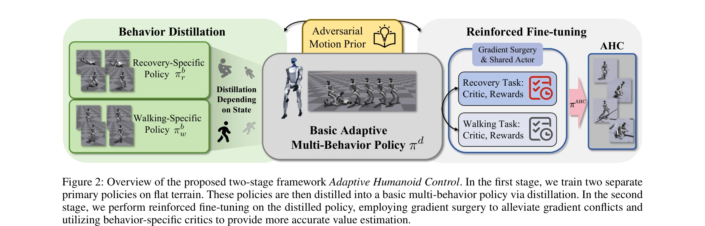
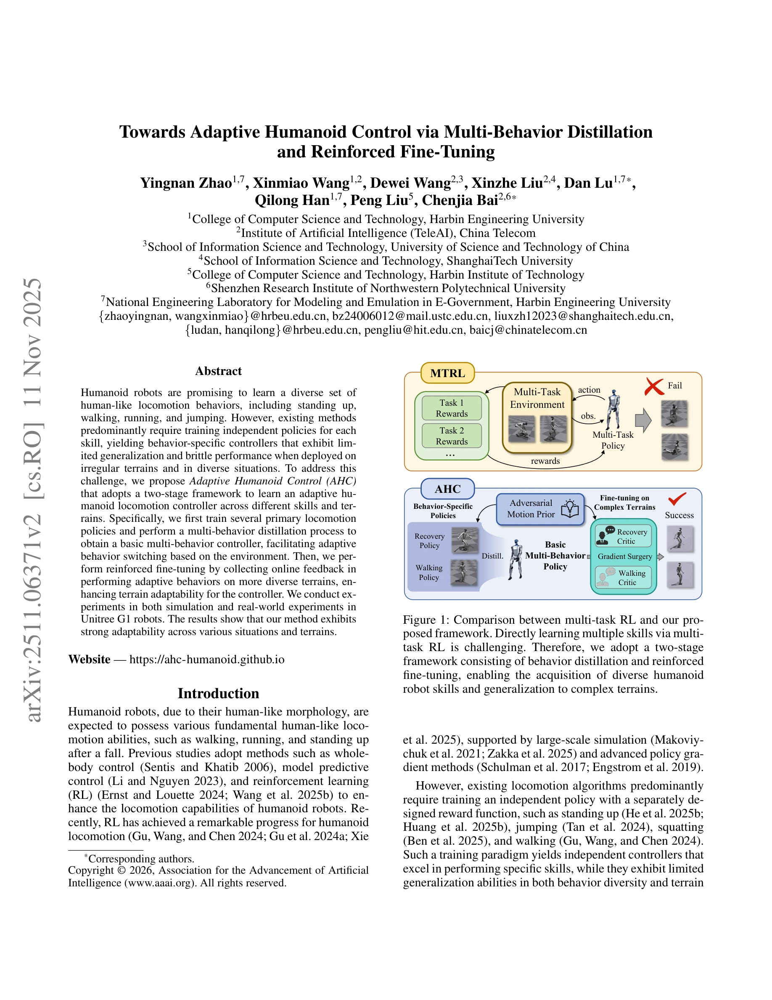

저자: Yingnan Zhao, Xinmiao Wang, Dewei Wang, Xinzhe Liu, Dan Lu, Qilong Han, Peng Liu, Chenjia Bai | 날짜: 2025-11-11 | DOI: 10.48550/arXiv.2511.06371

Figure 2: Overview of the proposed two-stage framework Adaptive Humanoid Control. In the first stage, we train two separ
휴머노이드 로봇이 다양한 이족보행 행동(서기, 걷기, 뛰기, 점프)을 학습할 수 있도록 다중행동 증류(multi-behavior distillation)와 강화학습 미세조정을 통해 적응형 제어기를 개발한다.

Figure 1: Comparison between multi-task RL and our pro-
Figure 2: Overview of the proposed two-stage framework Adaptive Humanoid Control. In the first stage, we train two separ
총평: 다중행동 증류와 강화학습 미세조정을 결합한 2단계 프레임워크는 휴머노이드 로봇의 적응형 제어라는 중요한 문제에 대한 실용적이고 효과적인 해결책을 제시하며, 시뮬레이션과 실로봇 실험을 통해 그 타당성을 입증했다.